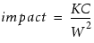
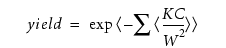

After you have
identified errors within your design, you can generate a score for
each error to see where potential improvements are likely to be
most beneficial.
Procedure
- Write the DFM rule checks
to find errors. For example:
spacing_error = External OD < 0.05
- Identify the properties that
you can use to calculate the yield impact of a specific error. For
example:
Assume the
yield impact of an individual error can be represented as the following:

where:
K is a constant
C is Common_run_length = EC(spacing_error)
W is actual spacing = EW(spacing_error)
- Use DFM Property to calculate
the score for each error cluster. For example:
error_scores= DFM PROPERTY spacing_error
[dfm_index = (K*EC(spacing_error)/EW(spacing_error)^2]
- Use DFM RDB to output the
error clusters and their scores into an RDB. For example:
errors {DFM RDB error_scores "./output/scores.rdb" SAME CELL}
Note: SAME CELL is required when you want to write the property
values to the RDB along with the data.
- Identify a formula that you
can use to calculate the total yield impact of violations of this particular
rule. For example:
Assume the
total yield impact of violations is calculated as:

- Use DFM Analyze to
calculate a total “yield impact” for the rule. In most cases, it
is easiest for the designer if this data is written to the same
RDB as the scores for the individual errors. For example:
total_impact { DFM ANALYZE spacing_error >= 0
[EXP(-SUM( (K*EC(spacing_error))/(EW(spacing_error)^2) ))]
RDB ONLY "./output/scores.rdb"}
After running the rule file
on the target design, designers are able to do the following:
- Load the RDB into Calibre
RVE for DFM.
- View the results of DFM Analyze
to see the total yield impact for the rule.
- Sort by the property created
using DFM Property (dfm_index
in the example) to see how individual errors contribute to the total
yield impact and plan how to fix the most serious errors.